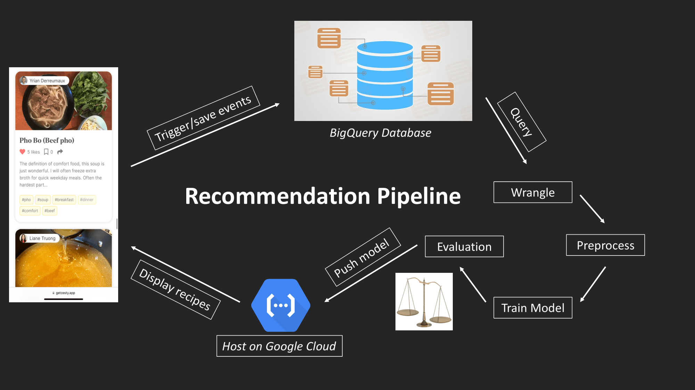

Portfolio
Zesty–Social Cooking App
I am one of three co-founders of Zesty, a social cooking app designed to help home cooks create, organize, and share their recipes with their friends and family
Background
As the COVID-19 pandemic swept the globe, I found myself with a lot of extra time on my hands, leading me to spend much of that first summer trying out new recipes. As I experimented with different recipes and techniques, I realized that it was difficult to keep track of all the recipes I had created or cooked. This led to the creation of Zesty, a platform where home cooks like me could share and discover new recipes, connect with each other, and exchange tips and inspiration. In this portfolio, I will share some of the work I have done on the app, including user research, deploying a recommendation engine, and building a recipe scrape feature. I am excited to share my work with you and look forward to discussing how I can contribute to your team.
Product Market fit
To validate our intuitions and test whether people really do struggle to organize and share their recipes, we designed and conducted several surveys using a representative sample via CloudResearch (total N=900). Our only selection criteria were that our sample had to be active home cooks (defined as those that cook at least one meal a week). Our research found that 83% of home cooks use two or more methods to organize their recipes. The majority also expressed dissatisfaction with their current organization method. When asked whether they would be interested in using a platform like Zesty to organize their recipes, the majority (87%) responded positively.
Personalized Recommendation Engine
Our market research revealed that over 90% of people who visit recipe websites do so for inspiration about what to cook. Another 78% said they trust recommendations from their friends and family more than recommendations from recipe websites. We used this information to build a personalized recommendation engine that allows users to discover new recipes based on their personal tastes and preferences.
Yrian applied his knowledge from graduate school to develop and deploy a deep collaborative filtering recommendation engine using Tensorflow, which is hosted on google cloud platform. The model uses users past interactions to generate a list of recommended recipes based on the preferences and behavior of similar users. The model uses a multi-layer perceptron (MLP) architecture, with multiple hidden layers of neurons to learn complex nonlinear relationships between the user and recipe features. 
Importing recipes from other websites
Many home cooks struggle to organize their recipes. Often times, this is because recipes are stored in different places. Our newest feature allows users to easily import recipes from other websites, thereby allowing them to keep track of all their recipes in one place. Each recipe is stored in the same format, which also makes it easy to follow when you are cooking.
Feugiat aliquam
Nam sapien ante, varius in pulvinar vitae, rhoncus id massa. Donec varius ex in mauris ornare, eget euismod urna egestas. Etiam lacinia tempor ipsum, sodales porttitor justo. Aliquam dolor quam, semper in tortor eu, volutpat efficitur quam. Fusce nec fermentum nisl. Aenean erat diam, tempus aliquet erat.
Etiam iaculis nulla ipsum, et pharetra libero rhoncus ut. Phasellus rutrum cursus velit, eget condimentum nunc blandit vel. In at pulvinar lectus. Morbi diam ante, vulputate et imperdiet eget, fermentum non dolor. Ut eleifend sagittis tincidunt. Sed viverra commodo mi, ac rhoncus justo. Duis neque ligula, elementum ut enim vel, posuere finibus justo. Vivamus facilisis maximus nibh quis pulvinar. Quisque hendrerit in ipsum id tellus facilisis fermentum. Proin mauris dui, at vestibulum sit amet, auctor bibendum neque.